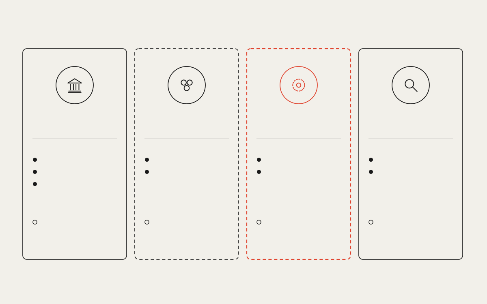

Who does what Systems EXIST TODAY DOES Execute and hold state Validate Decide what things mean NEVER Adopt another system's rules Shared conventions MAY FORM · OPEN QUESTION DOES Set common conventions Translate between members NEVER Change what is recorded underneath Ordering service PROPOSED DOES Order records Keep them available NEVER Read, execute, validate or interpret Readers WHOEVER IS CHECKING DOES Fetch the record Verify on their own terms NEVER Rely on a single party's log The open questions are worked on in the open, through the fellowship and public working groups. P4 · ROLES · engineering-print · does / never · merges V02 and V08